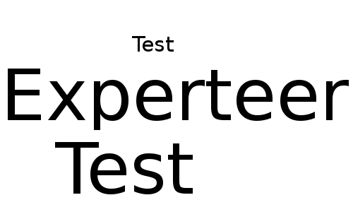

Blobsterix
A new way to manage (binary) content
Daniel Sudmann
Nov, 18 2013
History
History
- Currently all binary content is served through the application servers (cpu cicles, traffic)
- All images have to be saved in all relevant formats at all times
- Introducing new formats/sizes is PITA
- Optimizing for mobile (WebP) is hard (content negotiation not implemented/hard to do)
- Lots of code just to handle binaries
Blobsterix
Higher level goals
- Give flexibility for storing arbitrary things and transform them
- Give flexibility for optimizations (mobile)
- Extract service to make main app smaller
- Releasing Blobsterix as OS to show how cool we are (HR)
- Give challenging task to students
- Exploring new technologies
Requirements (main)
Goals
- Only store one source version of a file in the permanent storage
- Be able to serve the file in different formats
- Caching the derived versions of a file
- Manage access to formats and file without the application backend
- No application code in Blobsterix (zero config, share nothing)
Examples
Cropping

Scaling
Use cases
- It allows for on the fly transformation of images (format and content)
- It does content negotiation with the client
- Images can be scaled, cropped, recolored and even water marked
- PDFs could be renderer to html
- URLs contents could be downloaded and be cached (job screenshots ;-) )
- http://cloudinary.com/
Dependencies
- ruby 1.9 (fibers)
- lighttpd 1.5 (if you want X-Sendfile)
- goliath
Architecture
Interface
- A s3 compatible interface that allows upload and download of content (internal use only)
- An external access point that serves content transformed for the client (manipulation secured and time secured)
Internal architecture

Going forward
Making it robust and production ready until end of November (monitoring, client code)
Development of migration plan because of the dependencies. Either change our ops and/or wait until we're ruby 2.0 capable.
Migrate current assets system to Blobsterix until Q2